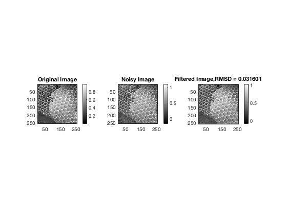
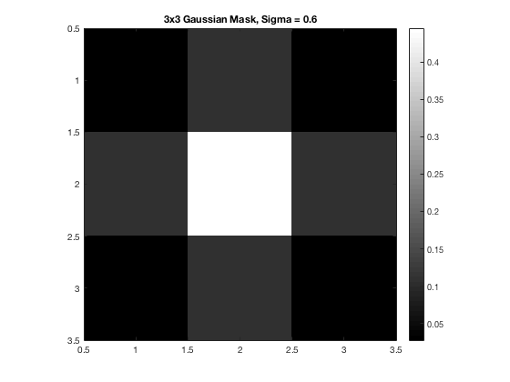
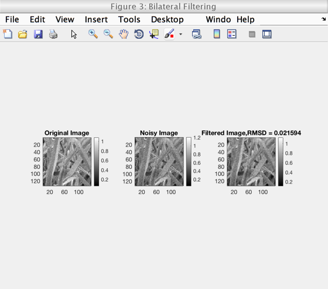
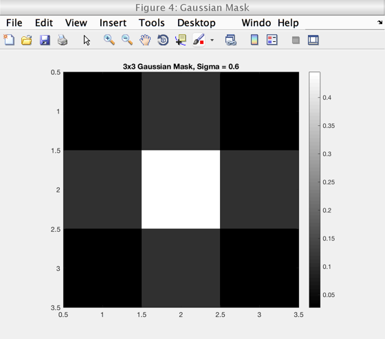
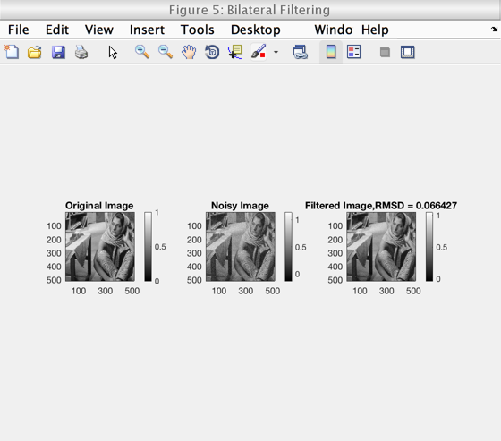
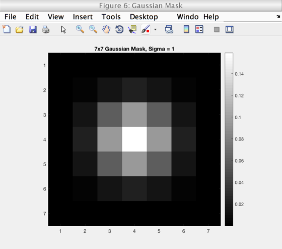

Contents
Report - Bilateral Filtering
clear;
warning('off','MATLAB:dispatcher:nameConflict');
clc;
disp('IMPORTANT REMARKS:')
disp('1. RMSD value is subject to change slightly with each run of code as the noisy image which is input to the filter is different for each run.');
disp('2. RMSD values for the four different cases were computed for each image by calling the function myBilateralFiltering() again and again.');
disp('3. RMSD values for the four different cases were obtained from the OLD NOISY images as present in the problem statement earlier.')
disp('4. Optimal RMSD values are obtained for the NEW IMAGES, which Sir uploaded today.')
IMPORTANT REMARKS:
1. RMSD value is subject to change slightly with each run of code as the noisy image which is input to the filter is different for each run.
2. RMSD values for the four different cases were computed for each image by calling the function myBilateralFiltering() again and again.
3. RMSD values for the four different cases were obtained from the OLD NOISY images as present in the problem statement earlier.
4. Optimal RMSD values are obtained for the NEW IMAGES, which Sir uploaded today.
imagePath = '../data/honeyCombReal.png';
[newImage, RMSD] = myBilateralFiltering(imagePath, 0.2, 0.6, 3);
disp('Optimal sigma_intensity_gaussian = 0.2');
disp('Optimal sigma_spatial_gaussian = 0.6');
disp(strcat('Optimal RMSD value = ' ,string(RMSD)));
spatial_gaussian_mask = fspecial('gaussian', [3 3], 0.6);
gaussianMask(3, 0.6);
disp('RMSD values for different sigma :');
disp('(a) 0.9*sigma_spatial and sigma_intensity = 0.043005');
disp('(b) 1.1*sigma_spatial and sigma_intensity = 0.042661');
disp('(c) sigma_spatial and 0.9*sigma_intensity = 0.042686');
disp('(d) sigma_spatial and 1.1*sigma_intensity = 0.042504');
clear;
Optimal sigma_intensity_gaussian = 0.2
Optimal sigma_spatial_gaussian = 0.6
Optimal RMSD value =0.031601
RMSD values for different sigma :
(a) 0.9*sigma_spatial and sigma_intensity = 0.043005
(b) 1.1*sigma_spatial and sigma_intensity = 0.042661
(c) sigma_spatial and 0.9*sigma_intensity = 0.042686
(d) sigma_spatial and 1.1*sigma_intensity = 0.042504
 
grassNoisy.mat
imagePath2 = '../data/grass.png';
[newImage2, RMSD] = myBilateralFiltering(imagePath2, 0.2, 0.6, 3);
disp('Optimal sigma_intensity_gaussian = 0.2');
disp('Optimal sigma_spatial_gaussian = 0.6');
disp(strcat('Optimal RMSD value = ' ,string(RMSD)));
spatial_gaussian_mask = fspecial('gaussian', [3 3], 0.6);
gaussianMask(3, 0.6);
disp('RMSD values for different sigma :');
disp('(a) 0.9*sigma_spatial and sigma_intensity = 0.021392');
disp('(b) 1.1*sigma_spatial and sigma_intensity = 0.021585');
disp('(c) sigma_spatial and 0.9*sigma_intensity = 0.021572');
disp('(d) sigma_spatial and 1.1*sigma_intensity = 0.021453');
clear;
Optimal sigma_intensity_gaussian = 0.2
Optimal sigma_spatial_gaussian = 0.6
Optimal RMSD value =0.015813
RMSD values for different sigma :
(a) 0.9*sigma_spatial and sigma_intensity = 0.021392
(b) 1.1*sigma_spatial and sigma_intensity = 0.021585
(c) sigma_spatial and 0.9*sigma_intensity = 0.021572
(d) sigma_spatial and 1.1*sigma_intensity = 0.021453
 
barbara.mat
imagePath3 = '../data/barbara.mat';
[newImage3, RMSD] = myBilateralFiltering(imagePath3, 0.12, 1, 7);
disp('Optimal sigma_intensity_gaussian = 0.12 ');
disp('Optimal sigma_spatial_gaussian = 1.0 ');
disp(strcat('Optimal RMSD value = ' ,string(RMSD)));
fprintf('\n');
spatial_gaussian_mask = fspecial('gaussian', [7 7], 1);
gaussianMask(7, 1);
disp('RMSD values for different sigma :');
disp('(a) 0.9*sigma_spatial and sigma_intensity = 0.066689');
disp('(b) 1.1*sigma_spatial and sigma_intensity = 0.066354');
disp('(c) sigma_spatial and 0.9*sigma_intensity = 0.066583');
disp('(d) sigma_spatial and 1.1*sigma_intensity = 0.066864');
toc;
Optimal sigma_intensity_gaussian = 0.12
Optimal sigma_spatial_gaussian = 1.0
Optimal RMSD value =0.06645
RMSD values for different sigma :
(a) 0.9*sigma_spatial and sigma_intensity = 0.066689
(b) 1.1*sigma_spatial and sigma_intensity = 0.066354
(c) sigma_spatial and 0.9*sigma_intensity = 0.066583
(d) sigma_spatial and 1.1*sigma_intensity = 0.066864
Elapsed time is 234.141918 seconds.
 